Databases - Flask-SQLAlchemy
Flask-SQLAlchemy is a wrapper for SQLALChemy, SQLALchemy is a ORM or Object Relational Mapper, this allow the application to manage the database using high level objects such as classes, objects and methods instead of tables and SQL, in other words ORM translate high-level operations in database commands.
Flask-SQLAlchemy support different databases, relational an no-n relational, we can use a simple database such as SQLite for prototyping and development and once deploy we can switch to a more complex database without the need to change much parts for the code.
Installation¶
1 | |
Database migration¶
The author of mega-tutorial make a good point, not all tutorial cover migration of a database, this is important since the relational databases are base in structures data so if data change the database need to change and we will need to make the migration of the data that already exist, so there is where the author introduce a library write by himself called Flask-migrate which is a wrapper for Alembic.
Installation¶
1 | |
Flask-SQLAlchemy Configuration¶
I will continue using the example of the microblog use in the form extension notes, and we are going to use the SQLite database.
We are going to add two new configuration to the config file
config.py
1 2 3 4 5 6 7 8 9 10 11 12 | |
so from the previous code
- the definition of
basedirI just define a base directory. - SLQAlchemy take the location of the database from the configuration variable
SQLALCHEMY_DATABASE_URas we mentioned in the notes for forms, it is a good practice store the configuration variable in the environment variable, and provide a fall-back in case of failureor 'sqlite:///' + os.path.join(basedir,'app.db')in this case the fall-back will look for a database file in the root directory. SQLALCHEMY_TRACK_MODIFICATIONSthis variable is set tofalse, this is to disable a feature from Flask-SQLAlchemy that is not need it , this feature signal the application every time a change is about to be made.
Initialize the database and the migration object¶
The database is going to be represented for the database instance, same as the migration engine. These two object should be create it after the creation of the application, so:
application/ini.py
1 2 3 4 5 6 7 8 9 10 11 | |
from the code we have:
- like most extensions we have the instance of the objects that will represent that extension, for example
dbwhich will be the object that represent the database. - most of the extension in flask will follow similar pattern
- finally we import models ad the end of the script, this model define the structure of the database.
Database Models¶
The database will be represented by a collection of classes called database models, the ORM layer from SQLAlchemy will take care of the translation of classes to rows and proper tables
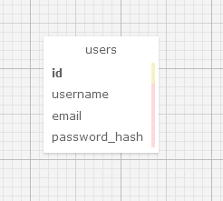
so for the table we see 4 different rows
1. id whihc is the primary key and will represent each unique user
2. the other 2 field are username and email the data type is VARCHAR which is basically a string.
3. the password_hash this is a good practice, we should never safe the plain text password in the database.
now we need to create the database model, the class that will represent the table
Application/models.py
1 2 3 4 5 6 7 8 9 10 11 | |
- the class that will represent the table will inherit from
db.Modelwhich is the base for all models from Flask-SQLAlchemy - each variable will represent the database columns, there are instance of the
db.Columnclass, this class receive as argument the data type and some additional optional arguments like, Primary key, index, and unique. - finally the method
__repr__this method tells python how to print the objects of this class, it is useful in debugging
bellow and example of how will python print the object
1 2 3 4 | |
Creating The Migration Repository¶
the previous class represent the model or the schema of the database, but is highly possible that this structure will change with the time, so we will need to do some migration, the author of the mega-tutorial created a Flask extension Flask-Migrate that use Alembic to do the migration.
Alembic create migration scripts and safe the changes face with each migration, in order to safe those scripts and changes we will need to create a migration repository so we can store that information.
Flask-Migrate is design to interact with flask commands, similar to what we use flask run in this case flask-Migrate will use flask db to manage everything related with databases.
To create the migration repository for our example we use flask db init
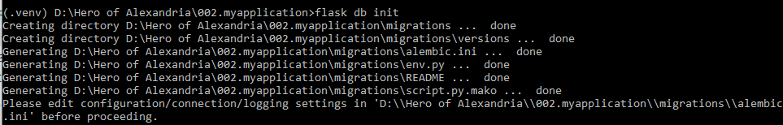
these
flaskcommands relay in theFLASK_APPenviroment variable so it is important to make sure that variable is set properly before execute the command.
after the command is executed a new directory will appear
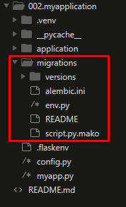
The First Database Migration¶
There are two ways to do the migration, automatically and manually. To generate the automatic migration Alembic compares the database schema as defined in the database models and the current database, after that it will generate the script to migrate and make the models match to the models defined in the schema. To generate this automatic migrations we use flask db migrate
1 | |
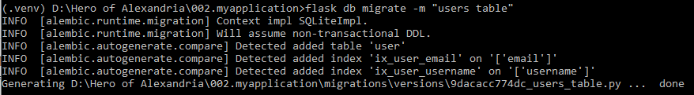
from the previous answer:
- first two lines are not important for now.
- Alembic tell use where the migration script was store, and assigned an unique code.
- the -m in the command was just to add extra description to the migration.
now the generated script is in the folder
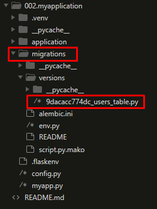
I wont go to details in what the script mentioned, but we can point that there are two main functions upgrade() and downgrade(). the upgrade() apply the migration and downgrade() removes it. This will allow Alembic to perform the migrations to a any point in the history even older versions using the downgrade() path.
It is important to remark that the command flask db migrate doesn’t perform the changes in the database, it just generate the script, to execute the changes we use flask db upgrade.
Note: the example use SQLite, so in this case a file containing the database will be create but in production if we use different database server we need to create the table first.
By default Flask_SQLAlchemy use snake case for the name of the databases, so a model named “AddressAndPhone” will generate a table “address_and_Phone” so if we want to change this behavior we can add the attribute __tablename__ to the model class.
so let’s say we want the table to be called “Users”, it will be something like:
1 2 3 4 5 6 7 8 9 10 11 12 13 14 15 | |
Database Relationships¶
Now we will add other table, this time will be the table that represent the post, we need to be careful reading the table, there will be a foreign key that will be the way to represent the relationship between the both tables
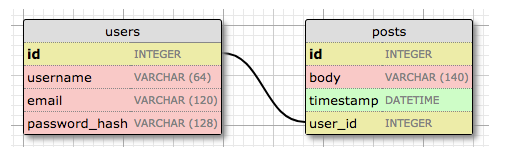
Now we can see a second table posts this table will contain an unique id field, the body, the timestamp and a foreign key called user_id. This foreign key is the way to link both tables, this relationship is called one-to-many ( one user can write many ports ).
Noww the model will change application/models/py
1 2 3 4 5 6 7 8 9 10 11 12 13 14 15 16 17 18 19 20 21 22 23 | |
From the code above:
PostClass represent the post the user will write.timestampwill be a indexed column so we can search the records chronologically, and it contain a default argument set todatetime.utcnownotice that is without the()it is because we are passing as a default argument a function not the result of that function. the timestamp will be convert to the user time when they are displayed.user_idwas initialized as the Foreign keyuser.id, in other words, it is a reference to theidvalue in the tableuser
SQLAlchemy by default will treat all the table names as lower case which is different to what is use in SQL and different of the class name, but there is way to change that behavior as it was explain above by using the attibute
__tablename__.
New field db.relationship¶
Now we discuss the new field in the User table. We added the line posts = db.relationship('Post', backref='author', lazy='dynamic') this is not a real database field but rather a high-level representation of the relationship of User table and Post (it won’t be in the relational diagram)>
For this type of relationship one-to-many the db.relationship is going to be in the one side of the relationship, and it is a convenient way to access the many, with an example will be easy to understand, let way we have a user u and we want to access all the post written by u we just need to call u.post.
now form the expression we have:
- the first argument is the many side of the relationship, in ths case
Post. - the
backrefdefine the name of the argument one the many side object that point back to the one object, in other words this will addpost.authorexpression that will return the user given a post. lazydefine how the database relationship will be manage, it wont be explain yet, hope i can do it later.
Migrate the changes¶
Since we made changes to the database we will need to migrate the changes.
First, We generate the database migration
1 | |
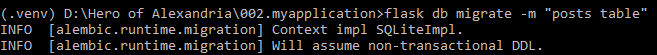
second, we applied the migration to the database
1 | |
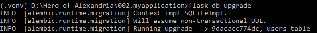
Play Time¶
Now, we can use the python interpreter to test the database we create, first we can start creating the Users
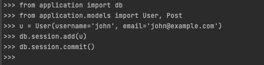
with the interactive environment we can create the record.
- Create the User records by using the class and the parameters
usernameandemail - use
db.session.add(u)we use thesession.add()to add the object, preparing for commit but not commit yet. - Use the
committo commit to the database
1 2 3 | |
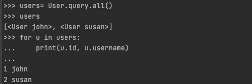
from the previous images
- we use to get back all records
User.query.all(). - the result of the previous query will give back all the records on the table.
Now if we want to get just one record we can use a index type of query
1 | |
now for the Post part
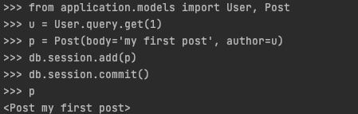
Now to delete all the records
1 2 3 4 5 6 7 8 9 | |
Shell Context¶
Now, the Shell context is a extra help Flask provided, this is base in the fact that during the development of a site with flask we will need to test constantly using the python interactive console, and that will required the constant import such as:
1 2 | |
we can avoid this issue using the shell context, this context will run within the app context to test we can make the following test
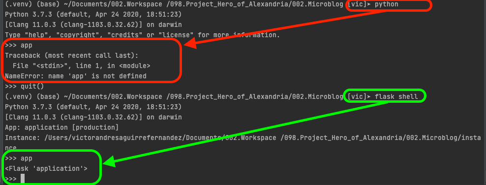
We can use some of the flask decorators to add this imports to the shell context, for that we need to add something to one of the files
microblog.py
1 2 3 4 5 6 | |
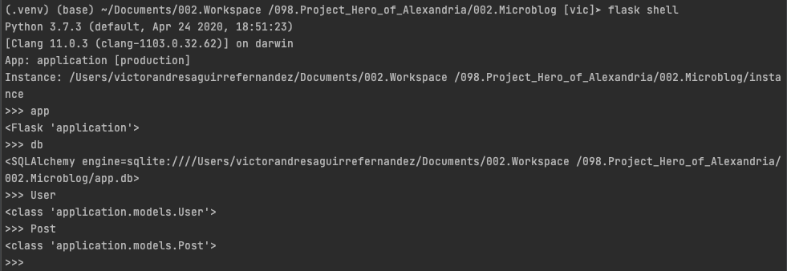